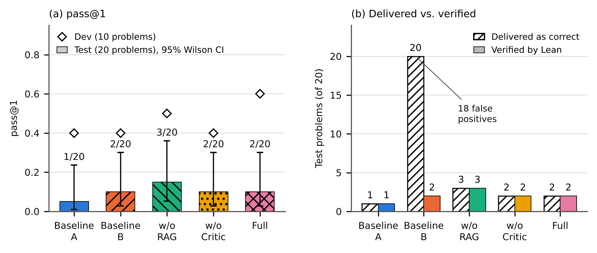
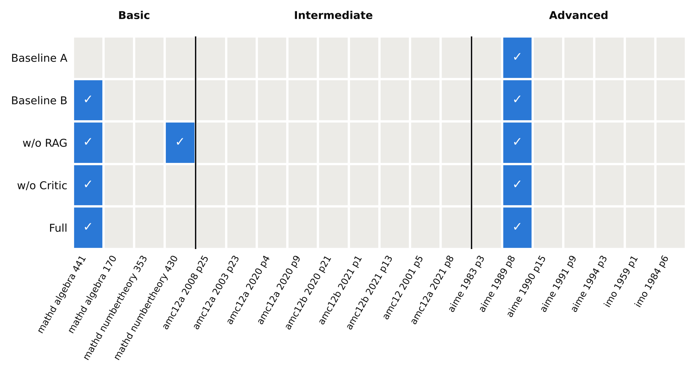
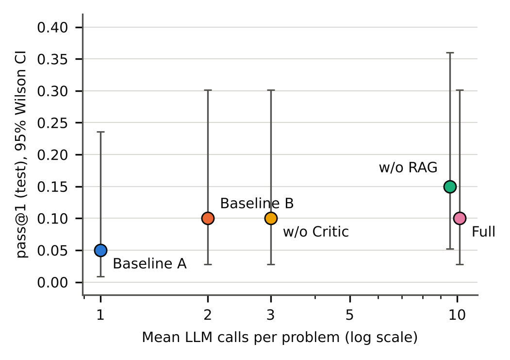
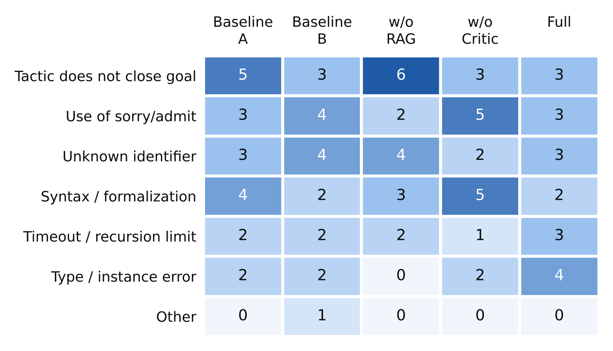
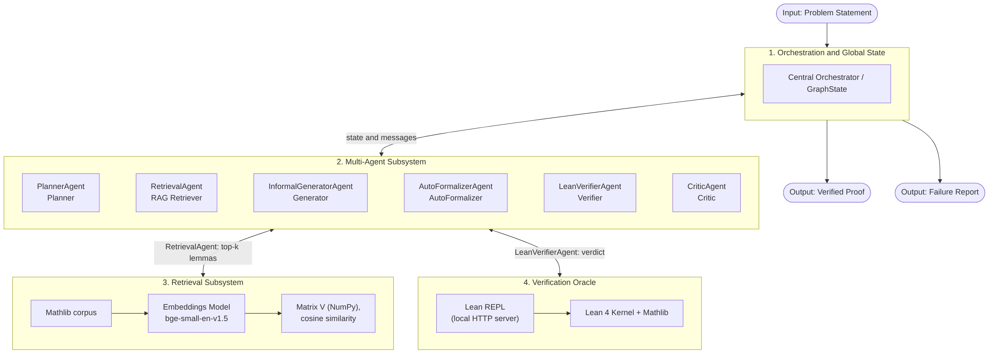
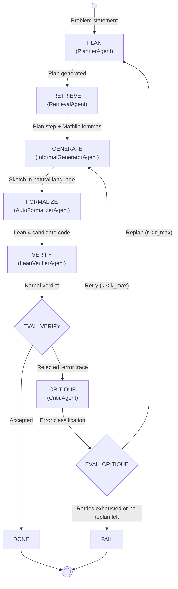

Results explorer for 5 experimental configurations on 30 miniF2F problems. It only reads saved results: no LLM calls, no Lean.




Agents: Planner, Retriever (RAG), Generator, AutoFormalizer, LeanVerifier, Critic, orchestrated with LangGraph. Flow: PLAN → RETRIEVE → GENERATE → FORMALIZE → VERIFY → (CRITIQUE | DONE | FAIL). The Critic can retry a subgoal (k ≤ 3) or replan (r ≤ 1).


A research prototype for a course project (Inteligencia Computacional, UPTC Sogamoso). Six agents try to prove 30 miniF2F problems in Lean 4 / Mathlib. A proof counts only if the Lean kernel accepts it.
Small evaluation set (30 problems), a single model (gemini-3.5-flash-lite, free tier) and a single run per configuration;
tuning on 10 development problems; possible training-data contamination (miniF2F is public); heuristic error taxonomy;
Lean 4.36.0-rc2 with a fixed Mathlib commit. Results describe trends, not general capability.
This page does not run Lean or call any LLM. Code, prompts and instructions:
github.com/KimberlyFigueroa21/proyecto_ia_lean (tag congelado).
Authors: Kimberly Natalia Figueroa Zapata, Alisson Páez Alarcón (UPTC Sogamoso).